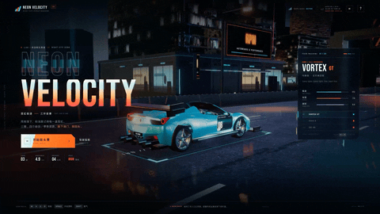
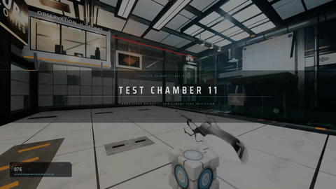
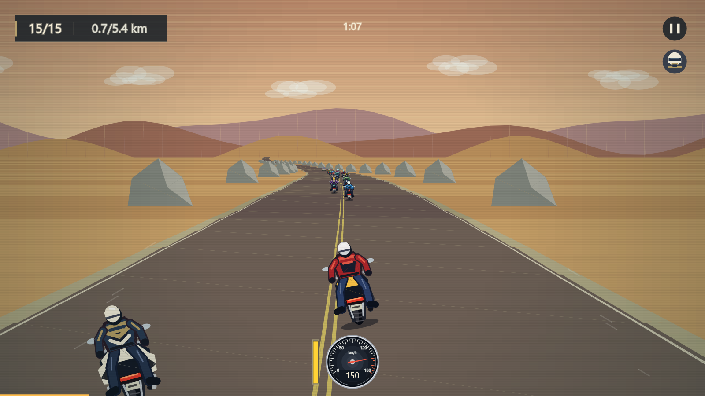
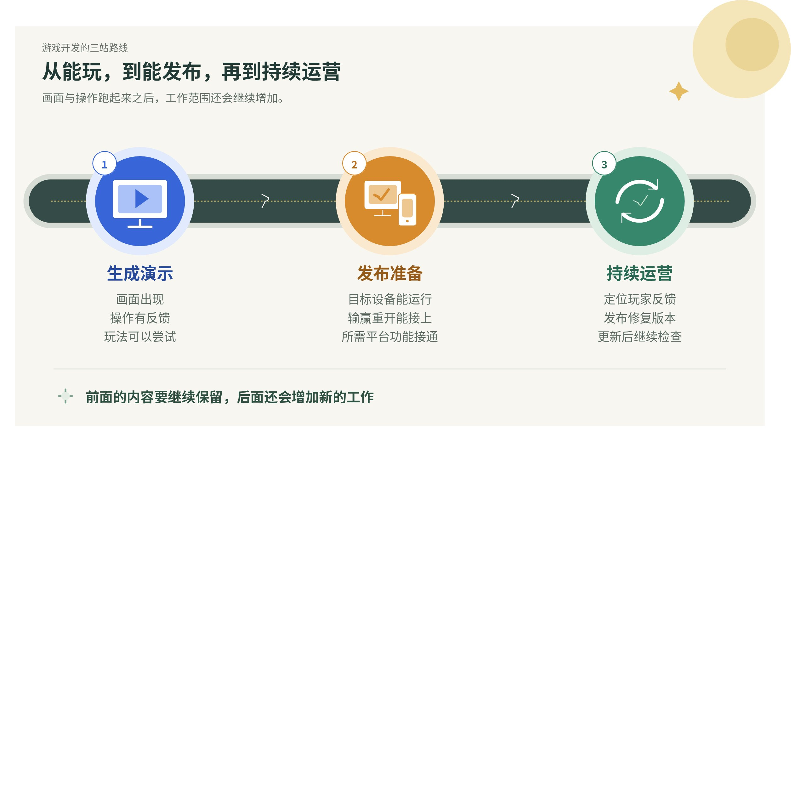

展开本页目录
本文内容同步自飞书修订号 59，原文配图已存入本站。文中的《泡利摩托》可直接进入 HTML 版体验。
查看飞书原文 ↗从 Kimi K3，到这次的 DeepSeek-V4.1-Flash-1017，给一段需求，就能看到车在跑、角色能操作，光影和场景还挺像回事。🤩
📷 DeepSeek 官方网页赛车演示

演示也有不同形式。有的用网页实现，有的进入游戏引擎，比如这次的 Godot 游戏。官方介绍的过程里，AI 会在工具环境中写代码、看结果、继续修改。
📷 DeepSeek 官方 Godot 游戏演示

然后，看看我这边。
👇 再看看我自己做的游戏

对，就是这个极其简陋的画风。😂
这是我最近做的《泡利摩托》（仿照的 1996 版暴力摩托，为了过审改了个谐音名字），在《原神》千星奇域里运行的一款摩托游戏。用的还是 GPT-Astra-极高。
图为本地模拟器中的开发画面。奇域编号 GUID：28554404086。
🕹️ 先把游戏跑起来
一句话生成的游戏，往往已经是一段能运行的程序：接收按键，计算位置，再画出下一帧。网页游戏可以借助浏览器的图形能力，游戏引擎也提供了现成的制作工具。
📱 发给别人玩，条件开始增加
自己电脑跑得顺，换到玩家的设备呢？第一次进入没问题，退出再进呢？正常冲线没问题，中途退赛、连续重开呢？
一句“做个赛车游戏”，可以先让 AI 替你选一套画面和操作。可支持哪些设备、退赛怎么算、哪些进度要保留，通常还没说清。准备发布时，这些规则就得逐项确定，再检查能不能接上。
这些需求有的很小，有的会牵动原来的写法。它们不一定让画面更精美，却会决定游戏能不能正常玩下去。如果还希望玩家共同保留进度，数据放在哪里，又会成为一个新问题。
🧭 从能玩，到能发布，再到持续运营

🗃️ 从本地存档，到大家共用一份进度
如果还希望几个人共同使用一份进度、下次回来继续，就会多出一组新需求。
一个人玩，把进度存在自己的设备上，很多事情在本机就能完成。比如浏览器的 localStorage，就能在关掉页面后保留数据，但不会自动变成别人也能用的共同存档。
真正换了一道题的，是后一种。比如公共仓库只剩一把钥匙，两个人同时去拿，该给谁？有人断网后重新进入，看到的是旧进度还是新进度？谁有权限改这份数据？
这时需要有共享的数据来源，处理同步、权限和保存。常见做法是后端负责确认和处理变更，再用数据库等方式持久保存；也可以由游戏所在的平台或托管云服务承接。
- 谁能改：每个人只能改自己的内容，还是也能改共同仓库？
- 同时改怎么算：两个请求都说“我要这把钥匙”，怎样避免发出两把？
- 断线后怎么接上：重新进入时，要以哪份数据为准？
比如 Unity Cloud Save 就可以限制共享数据的读写，并用写入冲突检查避免覆盖刚被修改的数据。这些工具提供了能力，具体规则仍要接进游戏。
✂️ 漂亮画面，还要算运行的账
让 AI 很快写出一片树林，和让玩家的设备持续处理好这片树林，是两笔开销。车往前开，场景、碰撞和其他角色的行为仍要不断更新。
《泡利摩托》的浏览器原型挺顺，搬进千星奇域的 Lua 与界面控件环境后，早期城区却只有约 15 FPS。同一栋楼，网页里可以提前画好图案再复用，移植时却可能变成一堆要分别更新的小对象。看着差不多，工作量已经变了。
制作上也有另一笔账：精细的风格能不能做满所有场景？新动作会不会走样？改一处，是否连带许多地方重做？这些都会影响最终保留下来的画面。
🔧 上线之后，还要接着改
假设有玩家说：“第二局开始时，我的车不动了。”这时得知道他的设备、之前的操作、出问题的版本。找到原因后再修复，还要检查第一局和其他流程有没有被改坏。
更新涉及数据，也得接住上一版留下的进度。玩家很快离开，是操作不明白、节奏慢，还是难度突然上去了？下一版补内容还是改体验，也得看反馈。
我这次反复遇到的，就是画面已经能跑，后面还有一串问题等着处理。顺着这些问题往发布和运营想，要考虑的事情还会继续增加。回头再看截图，它只展示了其中很小的一部分。😅